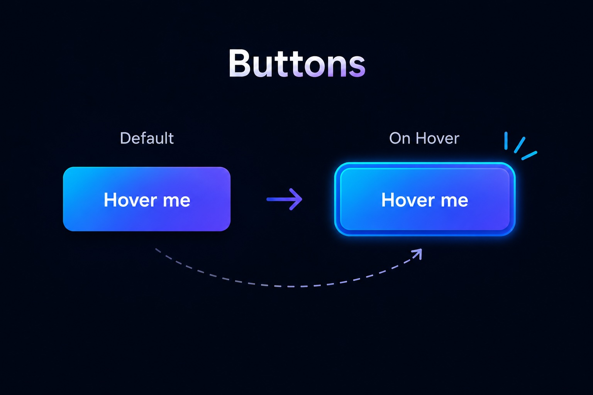
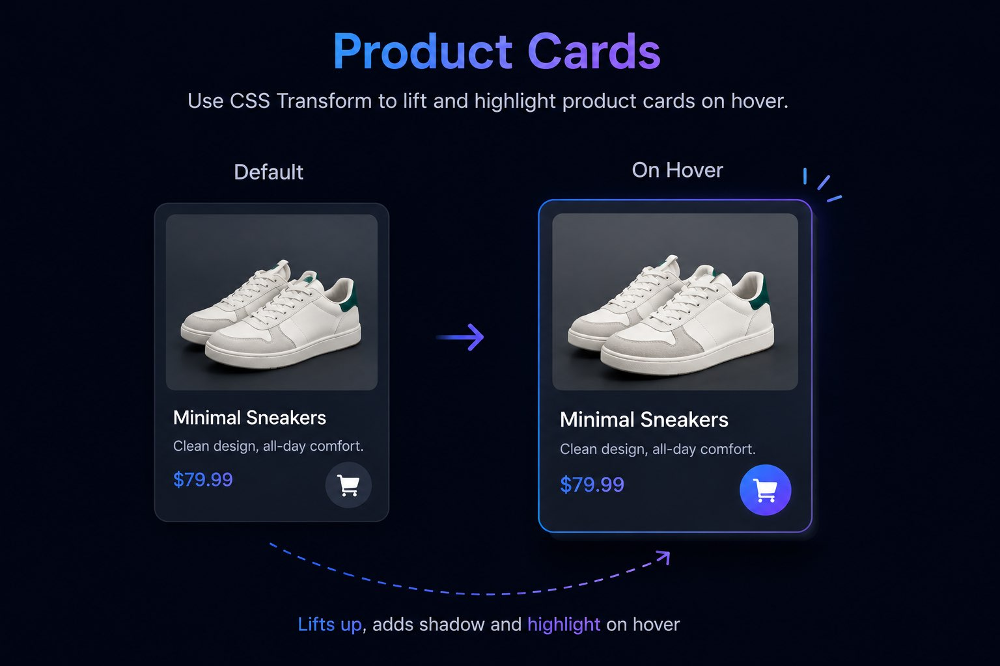
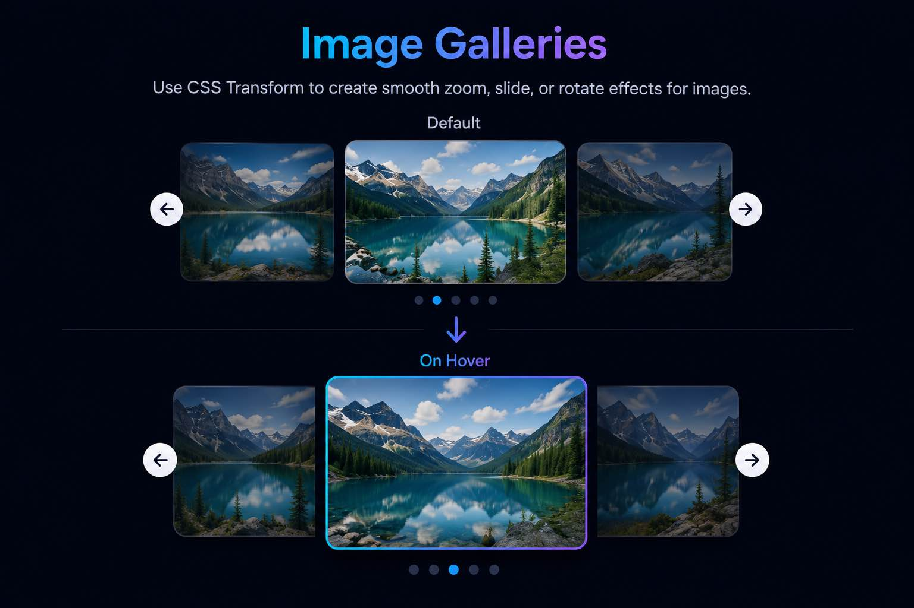
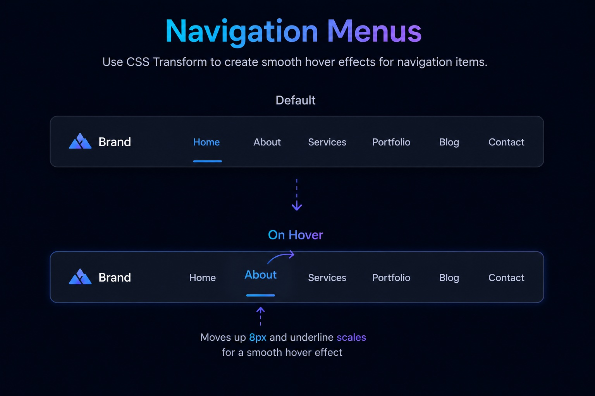
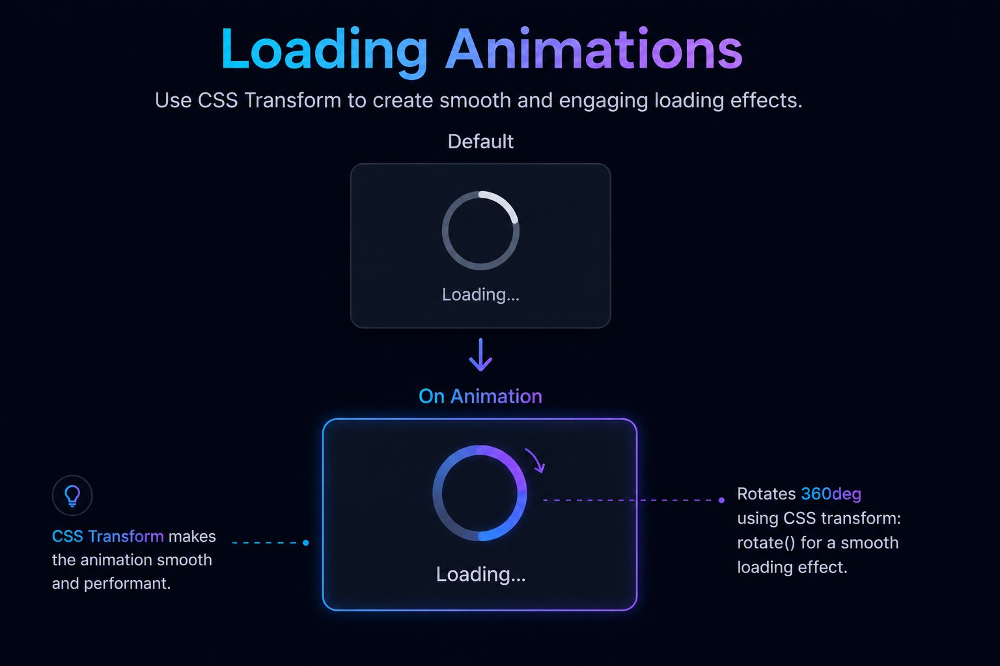
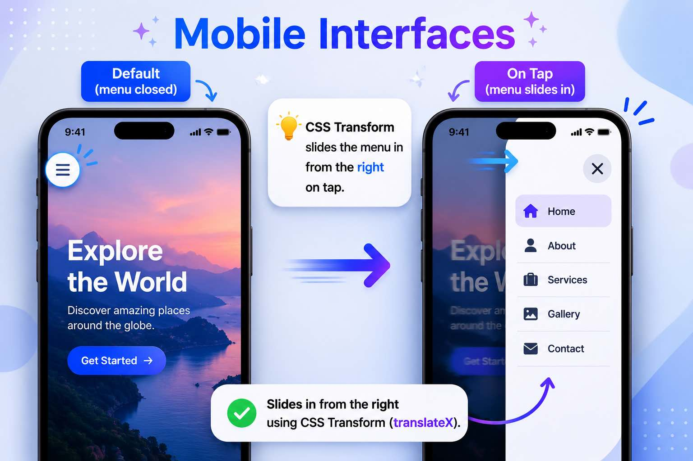

Buttons
CSS Transform can create engaging hover effects for buttons, making them more interactive and visually appealing.

CSS Transform is a property that allows developers to move, rotate, resize, or skew HTML elements. For example, the navigation buttons on this page use CSS Transform to create a dynamic hover effect.
.nav-btn:hover:not(.active) {
background: rgba(56,189,248,.2);
color: #38bdf8;
transform: translateX(8px);
/* Moves the button 8px
to the right on hover */
}CSS Transform changes the visual appearance of an element without affecting the normal page layout.
Moves an element without affecting layout.
.translate-btn:hover {
transform: translateX(30px);
/* Moves the button 30px
to the right on hover. */
}Rotates an element around a fixed point.
.rotate-btn:hover {
transform: rotate(15deg);
/* Rotates the button
15 degrees clockwise on hover. */
}Resizes an element while maintaining its proportions.
.scale-btn:hover {
transform: scale(1.2);
/* Scales the button to 120% of
its original size on hover. */
}Skews an element to create a tilted appearance.
.skew-xy-btn:hover {
transform: skew(20deg, 10deg);
/* Skews the button
20 degrees along the X-axis
and 10 degrees
along the Y-axis on hover. */
}CSS Transform helps create interactive and modern websites.
.smooth-demo:hover {
transform: translateY(-8px);
/* Moves the button upward */
}.feedback-demo:hover {
transform: scale(1.08);
/* Enlarges the button */
box-shadow: 0 0 20px rgba(56,189,248,.6);
}CSS Transform helps create modern and interactive interfaces.
Rotating UI Element
.loading-ring {
animation: spin 2s linear infinite;
}
@keyframes spin {
from {
transform: rotate(0deg);
}
to {
transform: rotate(360deg);
}
}Comparing the following two approaches: using margin vs. transform
/* Causes layout shift */
.margin-move:hover {
margin-left: 20px;
/* Adds 20px of empty space
to the left side
of the button on hover.
As a result,
the nearby text
shifts together,
causing a layout shift. */
}/* No layout shift */
.transform-move:hover {
transform: translateX(20px);
/* Moves the button
20px to the right
on hover,
without affecting surrounding content,
preventing layout shift. */
}CSS Transform can create engaging hover effects for buttons, making them more interactive and visually appealing.

CSS Transform can lift and highlight product cards on hover, helping important items stand out.

CSS Transform can zoom, slide, or rotate images to create a smoother gallery experience.

CSS Transform can animate menu items to guide users and improve navigation feedback.

CSS Transform can rotate or scale loading elements to create smooth and engaging loading animations.

CSS Transform can enhance touch interactions, sliding panels, and transitions in mobile interfaces.

#pros li:hover {
transform:
translateY(-10px)
scale(1.08);
color: #f97316;
text-shadow: 0 0 10px rgba(249,115,22,.45);
}
/* This page also demonstrates CSS Transform.
When hovering over the items on the left,
they slightly move upward and become larger. */Hover over the box below to see CSS Transform in action.
.demo-box:hover {
transform:
translateY(-15px)
rotate(5deg)
scale(1.1);
/* Moves the box up 15px,
rotates it 5 degrees,
and scales it to 110%
of its original size
on hover. */
}